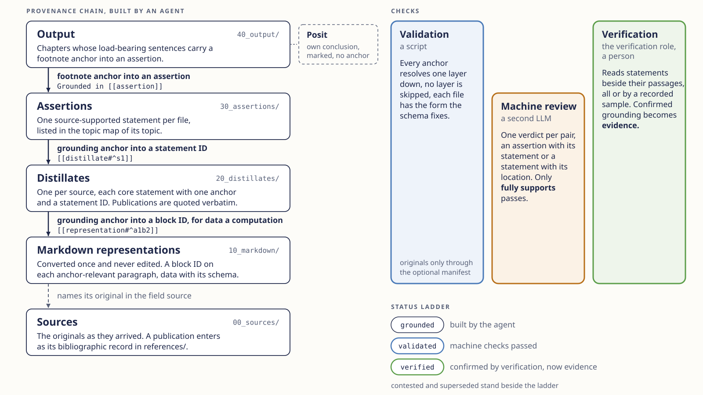

Grounded Vault
Grounded Vault
Grounded Vault
A repository architecture for knowledge bases in which every substantive statement carries a machine-resolvable anchor to its source, down to the single passage, dataset row or computation. AI agents build this structure, and the architecture makes no claim that the content is true. The result is an audit object for people who write reports, proposals or studies with an AI agent and need experts to check them passage by passage.

An AI agent builds the chain from the bottom up. A source is kept as it arrived, and a publication whose full text may not be stored enters as its bibliographic record. Its Markdown representation is converted once and never edited, with a block ID on each passage a statement could rest on. A distillate condenses one source into core statements, each with one anchor and a statement ID. An assertion states one matter and rests on one or more core statements, and a chapter of the output footnotes every load-bearing sentence to an assertion. An own conclusion stands in the chapter as a posit, with its rationale and its open evidence question.
Each anchor points one layer down and resolves by machine. This grounding is a structure an agent can produce and says nothing about whether a statement is true. Validation by tools/validate.py checks resolvability and form. In machine review a second Large Language Model (LLM), which sees only the pair and never the producing agent's reasoning, judges each statement against the location below it. Verification by the person named as verification role turns a confirmed relation into evidence.
A status is set only after its checks ran, with their dates recorded in the file. Distillates and assertions reach validated through validation and machine review, a chapter through validation once every assertion it cites is validated, and only verification sets verified. A document never stands higher than the anchors it rests on, as the status ladder defines, and the procedures are fixed in operations.md.
Origin
Grounded Vault is a profile of Promptotyping for knowledge work under an evidence obligation. It takes over the maintained project knowledge in knowledge/ and adds the anchor from every statement to its source. It draws on historical source criticism for the relational concept of evidence, on historical work practice and nanopublications for the assertion paired with its provenance, on scholarly digital editing for validating a corpus against its own schema, and on data management for provenance as a machine-traversable relation, as W3C PROV standardises it. The concept paper gives the reasons, and the repository is cited as given under Citation.
Reuse
The template needs Git, uv and a coding agent that reads and writes files, such as Claude Code or Codex. Obsidian is optional for following the links.
-
Create your repository
Choose Use this template on GitHub, then clone the new repository.
-
Install and validate
A fresh template reports
W-EMPTY,W-NO-OUTPUTandW-PLACEHOLDERuntil parameters and content are filled in.Shell, in the repository root uv sync --locked uv run python tools/validate.py . -
Set the parameters with the agent
The agent asks for purpose, topics, source types, genre, language, verification role, review mechanism, style sheet and harness rules.
Prompt Instantiate this Grounded Vault template for my project. Follow the section Prompt for the first agent session in SETUP.md and ask me one question at a time. -
Carry one source through every layer
Place one original in
00_sources/first, where it stays out of Git by default. One full pass shows whether the rules fit the material before a second source is touched.Prompt Take the source 00_sources/<file> through the first production cycle in SETUP.md, steps 1 to 6. Stop after each layer and show me the validator output.
Files to download
- grounded-vault-provenance-chain.svg the figure, for papers and slides
- grounded-vault-provenance-chain.png the figure as image, 1600 by 900
- grounded-vault-entry.png this page, title and figure, 1600 by 900
- grounded-vault-example.png the worked example, 1600 by 900


Example on the PROV-DM entity definition
The example carries one public source, the entity definition of the W3C PROV-DM Recommendation, through every layer. Run the prompts in order in a fresh copy of the template and compare each result with the committed files in examples/prov-entity/, whose IDs and wording your agent's files need not match.
-
Instantiate for the example
Prompt Instantiate this Grounded Vault template. Follow the section Prompt for the first agent session in SETUP.md, but take the class B parameters from examples/prov-entity/knowledge/specification.md instead of asking me, write no harness rules beyond those CLAUDE.md already carries, and register one planned chapter, 40_output/01-entity-definition, in the chapter register. Keep examples/ in place and delete README.md, CITATION.cff and codemeta.json without asking. Then copy examples/prov-entity/00_sources/prov-entity.txt into 00_sources/, and read no other file under examples/ until I ask you to compare.knowledge/specification.mdwith the example's parameters and the topic map30_assertions/MOC-Provenance.md. -
Ingest the source
Prompt Ingest 00_sources/prov-entity.txt. The text is short, so convert it yourself.10_markdown/documents/prov-entity.md, the definition as one paragraph ending in its block ID, in the example^entity-definition. -
Distill it
Prompt Distill 10_markdown/documents/prov-entity.md for the topic Provenance.20_distillates/documents/prov-entity.mdwith one core statement, its anchor[[10_markdown/documents/prov-entity#^entity-definition]]and the statement ID^s1. -
Build the assertion
Prompt Build the assertions of the topic Provenance.30_assertions/prov-entity-definition.md, grounded in[[20_distillates/documents/prov-entity#^s1]]and listed in the topic map. -
Write the chapter
Prompt Write the chapter 40_output/01-entity-definition.md as one paragraph on the entity definition, and validate it in chapter scope.40_output/01-entity-definition.md, one sentence with the footnoteGrounded in [[30_assertions/prov-entity-definition]], and the validator reportsCHAPTER READY. -
Export the pairs
Shell, in the repository root uv run python tools/review.py emit . --out prompts.jsonlprompts.jsonlwith two pairs, the passage with the core statement and the core statement with the assertion. -
Review them in a separate session
Copy
prompts.jsonlinto an empty folder outside the repository and start a session of an LLM of another model family there.Prompt for the reviewing LLM Each line of prompts.jsonl holds an id, a prompt_hash, a prompt and further fields. Answer only the prompt of each line, on its own and exactly as it instructs, and read no other file. Write one JSON line per record to verdicts.jsonl with the unchanged id and prompt_hash and a field response whose first line is the verdict and whose following lines give the justification the prompt asks for.verdicts.jsonl, one line per pair, in the example bothfully supports. -
Book the verdicts
Copy
verdicts.jsonlinto the repository root. Run the second command only when the first reports no deviating verdict.Shell, in the repository root uv run python tools/review.py judge . --verdicts verdicts.jsonlShell, in the repository root uv run python tools/review.py judge . --verdicts verdicts.jsonl --applychecked.machine-reviewwith the date on distillate and assertion. The batch is kept underchecks/, as in the example'schecks/review-2026-10-03.jsonl. -
Record the statuses
Prompt judge --apply has booked every document. Record the validation dates and set the statuses as SETUP.md describes under First production cycle, step 9, and keep verdicts.jsonl under checks/ as review-<date>.jsonl.Distillate and assertion at
validatedwith both dates, the chapter atvalidatedwith its validation date. -
Verification
The verification role reads the assertion beside its passage and, where it holds, sets
status: verifiedwithchecked.verification. In the committed example this step has not been performed.
uv sync --locked
uv run python tools/validate.py examples/prov-entity --chapter 40_output/01-entity-definitionLimits, licence and citation
- The architecture makes each statement checkable and records how far it has been checked. Whether a grounding relation holds as evidence is decided by verification alone.
- A freshly built vault holds grounding only. Where verification samples, only the sampled relations are evidence.
- Machine review is probabilistic and pre-filters the pairs for verification. A reviewer of another model family is recommended, and the family alone does not establish independence.
- Validation finds a paragraph without any footnote. An unsupported sentence inside a cited paragraph is found only by reading.
- Images whose content is not text, and code as output, are named extension points without a worked-out anchor.
Authored text is licensed under CC BY 4.0, code in tools/, tests/ and executable examples under MIT, and the PROV-DM excerpt keeps the W3C document licence. The shared DHCraft files, the DHCraft logo and the fonts keep their own terms.
CITATION.cffPollin, C. (2026). Grounded Vault [Computer software]. https://github.com/DigitalHumanitiesCraft/grounded-vault